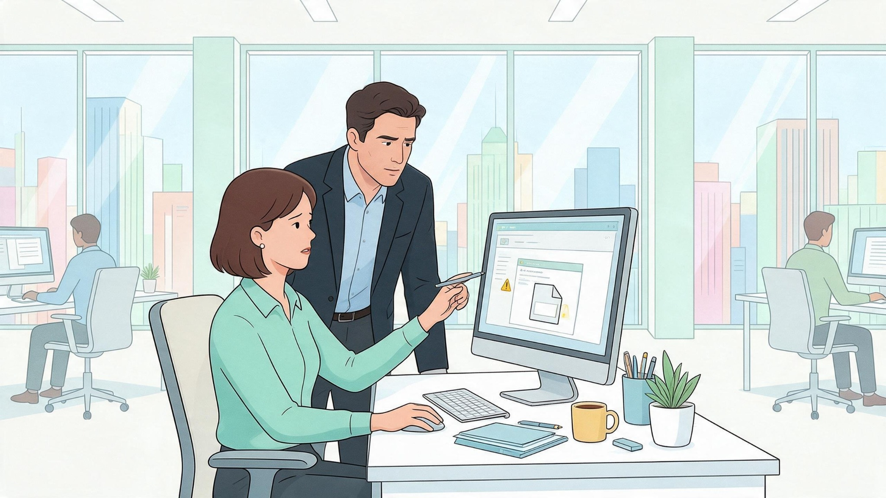

Engenharia social é o uso de técnicas de persuasão para convencer alguém a fornecer informações, ignorar procedimentos ou executar uma ação que normalmente não realizaria.
Em vez de atacar diretamente uma tecnologia, o criminoso explora confiança, boa-fé, medo, pressa ou respeito à autoridade.
Autoridade, urgência, simpatia, curiosidade e oportunidade são gatilhos frequentemente utilizados.
Um pedido pode parecer mais legítimo quando quem o faz afirma ser diretor, técnico de TI, auditor ou outro profissional que normalmente teria autoridade para solicitar determinada ação.
Uma pessoa liga para a recepção e diz trabalhar no suporte técnico. Ela afirma que existe uma falha grave e pede a confirmação imediata do usuário e da senha da estação.
A solicitação parece urgente e técnica, mas uma equipe legítima não precisa da senha pessoal do usuário para realizar manutenção administrativa.
Nunca forneça senhas, códigos de autenticação ou informações confidenciais apenas porque alguém parece conhecer detalhes internos.
Quando uma solicitação exigir uma exceção de processo, confirme a identidade da pessoa e valide a necessidade pelo canal oficial da empresa.
Engenharia social transforma comportamento em vetor de ataque. A defesa começa quando você verifica a identidade e a necessidade da solicitação.
A Engenharia Social no contexto da segurança da informação pode ser definida como:
Engenharia social explora o comportamento humano em vez de falhas de código de software.
Qual gatilho emocional é frequentemente explorado por golpistas em ataques de engenharia social?
Pressionar a vítima com urgência ou autoridade reduz a capacidade crítica e provoca erros impulsivos.
Se alguém desconhecido sem crachá tentar entrar na área restrita da empresa aproveitando que você abriu a porta, você deve:
A prática de carona física (tailgating) deve ser evitada; todos os visitantes devem se identificar na recepção.
Por que é perigoso publicar fotos do crachá corporativo ou da tela de trabalho nas redes sociais pessoais?
Redes sociais expõem dados valiosos que atacantes usam para personalizar ataques de engenharia social.